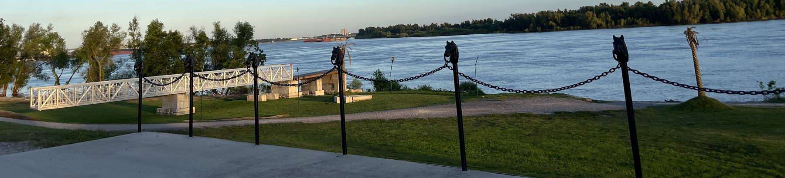

An 840 square foot BSL-2 lab
An environmental virology laboratory in the PACCAR Environmental Technology Building, with long-read sequencing, digital and quantitative PCR, and a dedicated node on the university computing cluster.
Huiyun Wu · Washington State University
We study the microorganisms in water that make people sick, and the engineering that removes them — from a wastewater sample to a treatment decision a utility can act on.
huiyun.wu@wsu.edu Research
The lab
Wastewater surveillance, virus removal and reuse, prophage ecology, source tracking and transport modelling, biofilms, and the sequencing and bioinformatics that hold it together.
The lab sits in the Department of Civil and Environmental Engineering at Washington State University, in the Voiland College of Engineering and Architecture.
An environmental virology laboratory in the PACCAR Environmental Technology Building, with long-read sequencing, digital and quantitative PCR, and a dedicated node on the university computing cluster.
Funding is available for master's and doctoral research assistants, and for undergraduate researchers. You do not need a background in microbiology.